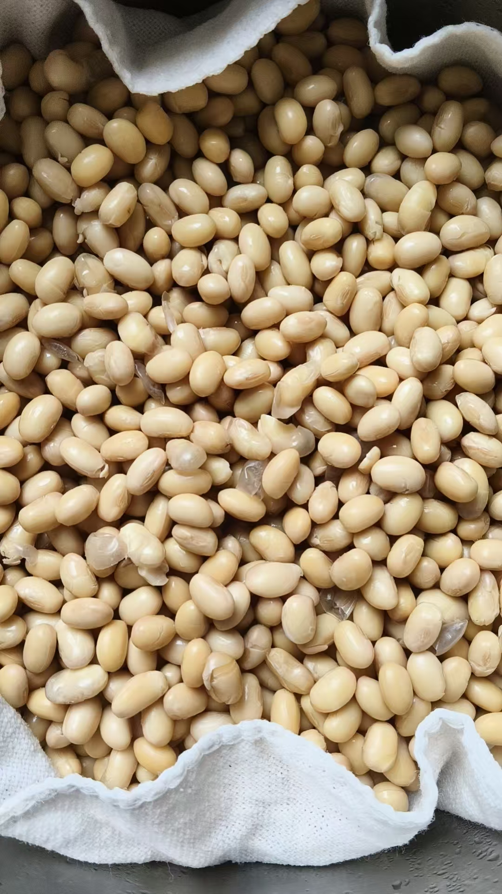
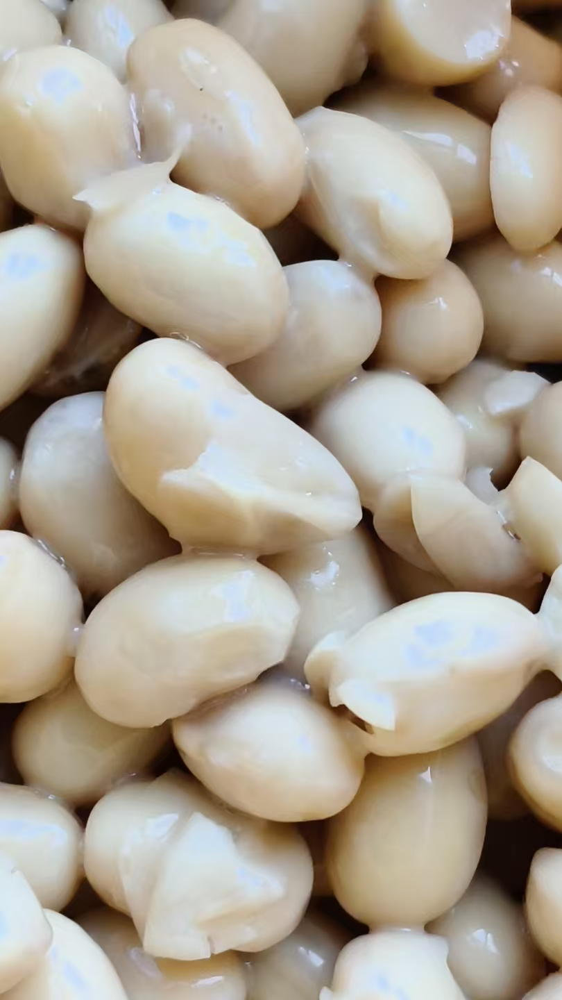
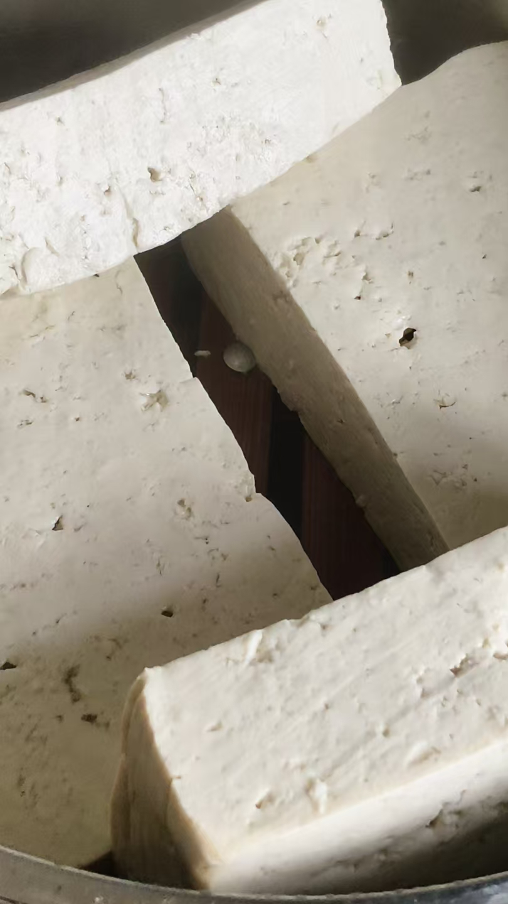

20260829做纳豆
原始对话记录
抖音看到，日本主播，96岁老人还在骑车上班
想起了纳豆
再做一点吃
很简单啊
泡一晚上，蒸半小时，凉透，拌上一点点纳豆酶菌，两三天就行了
黄豆
豆子已经发粘
明后天，拉丝
纳豆，口感有粘度
还不够
拉白丝才行
拉丝以后，放冷藏

豆成功了
粘粘的纳豆菌
盖上保鲜膜，放冷藏
拌上调料，随时吃

做一点毛豆腐
[呲牙][呲牙]我最爱吃臭豆腐
不过太咸了，吃不了
王致和那种，都不敢上饭桌，到厨房吃上一块，咽下去，再去吃饭，太臭了
[呲牙][呲牙][呲牙]
李洪志那时候说，吃臭豆腐的都是猪狗托生的
[呲牙][呲牙]
以下为编者整理的主题文章
编者整理 · 主题文章
泡一夜，蒸半小时，拌一点菌
导读：抖音上看到日本九十六岁的老人还在骑车上班，想起了纳豆，就再做一些吃。泡一晚上，蒸半小时，凉透，拌上一点纳豆菌，两三天就行。要拉到白丝，才算成。
抖音上看到一个日本主播，九十六岁的老人还在骑车上班。他想起了纳豆，就再做一点吃。
做法他写得很省："泡一晚上，蒸半小时，凉透，拌上一点点纳豆酶菌，两三天就行了。" 材料只有一样——黄豆。
接下来是等。豆子已经发粘，明后天，拉丝。
他对成色的判断很具体。纳豆口感有粘度，"还不够"，"拉白丝才行"。拉丝以后，放冷藏。白丝是菌发到位的样子，一拉，牵出一条，就说明可以吃了。
成品那页写着："豆成功了。粘粘的纳豆菌。盖上保鲜膜，放冷藏。拌上调料，随时吃。"
顺手的还有毛豆腐。"我最爱吃臭豆腐"，他说，不过太咸了，吃不了。王致和那种，"都不敢上饭桌，到厨房吃上一块，咽下去，再去吃饭，太臭了"。
最后一句转了个弯。李洪志那时候说，吃臭豆腐的都是猪狗托生的。他加了两个笑脸。
纳豆和臭豆腐，都是发过酵的豆。一个拉白丝，一个发臭。他两样都做。
说明与免责：本站为民间修炼、民俗文化与传统文化资料的整理与记录，内容源自传承者口传与个人修习体会，仅供文化交流与研究参考，不构成医疗、健康、投资或任何功效承诺。所述内容属传统术数范畴，请理性看待；如身体不适，请及时就医。请遵守法律法规与公序良俗。